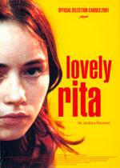

| |
|
|
Do 2. Februar 2006
"Inter-View", "Lovely Rita"
Space Movie präsentiert alle Filme von Jessica Hausner.
 Geboren 1972
in Wien. Studium der Psychologie, und ab 1991 Regie an der
Universität für Musik und darstellende Kunst, Abteilung Film und
Fernsehen in Wien, wo sie 1996 den Kurzfilm "Flora" realisiert, der auf verschiedenen
internationalen Festivals Preise erhält. Ihr Abschlußfilm "Inter-View" erhält im Rahmen der
Cinéfondation in Cannes 1999 den Spezialpreis der Jury. 1999 Gründung
der Filmproduktion Coop 99, mit Barbara Albert, Martin Gschlacht und
Antonin Svoboda. Zwei Jahre später wird ihr erster Langfilm "Lovely Rita" in Cannes im offiziellen
Programm "Un Certain Regard" uraufgeführt. Bis zu "Lovely Rita"
wurden alle ihre Filme auf Video und mit Laiendarstellern
gedreht. Ihr zweiter Langfilm "Hotel", ein Thriller, wurde
ebenfalls in Cannes im offiziellen Programm "Un Certain Regard"
uraufgeführt, und gewann auf der Diagonale 2005 einige Preise.
Geboren 1972
in Wien. Studium der Psychologie, und ab 1991 Regie an der
Universität für Musik und darstellende Kunst, Abteilung Film und
Fernsehen in Wien, wo sie 1996 den Kurzfilm "Flora" realisiert, der auf verschiedenen
internationalen Festivals Preise erhält. Ihr Abschlußfilm "Inter-View" erhält im Rahmen der
Cinéfondation in Cannes 1999 den Spezialpreis der Jury. 1999 Gründung
der Filmproduktion Coop 99, mit Barbara Albert, Martin Gschlacht und
Antonin Svoboda. Zwei Jahre später wird ihr erster Langfilm "Lovely Rita" in Cannes im offiziellen
Programm "Un Certain Regard" uraufgeführt. Bis zu "Lovely Rita"
wurden alle ihre Filme auf Video und mit Laiendarstellern
gedreht. Ihr zweiter Langfilm "Hotel", ein Thriller, wurde
ebenfalls in Cannes im offiziellen Programm "Un Certain Regard"
uraufgeführt, und gewann auf der Diagonale 2005 einige Preise.
|
Prix Spécial du Jury, Cinéfondation, Cannes 1999 Ö 1999, R: Jessica Hausner, D: Klaus Händl, Melina Oberndorfer, Birgit Doll, Hakon Hirzenberger. 48min |
Inter-View (Ö 1999)Jessica Hausner verbindet in Inter-View auf eigenwillige Weise die Geschichte eines Studenten, der Straßeninterviews macht, mit jener einer jungen Frau, die still, aber beharrlich dabei ist, sich ein Leben nach den eigenen Vorstellungen einzurichten, und reflektiert dabei die "Möglichkeiten von Glück und Unglück desselben". (Isabella Reicher) Ein junger Mann interviewt Leute auf der Straße. Er sucht nach Möglichkeiten von Glück, er befragt die Menschen nach ihrem Leben, auch, um für sich selbst Antworten zu finden. Dabei trifft er auf eine Frau, die, nach mehreren Misserfolgen, ihrem Leben schließlich eine Seite des Glücks abgewinnen kann – und trotzdem kann sie ihm keine befriedigende Antwort geben. „Jessica Hausner entwickelt in Inter-View eine intensive psychologische Studie über seelische Vereinsamung und gestörte Kommunikation. Das Interview als formales und gängiges Mittel zum Gedanken- und Informationsaustausch wird hier paradoxerweise zum schlimmsten Feind zwischenmenschlicher Verständigung. Indem die junge Regisseurin gestellte Dialoge mit "echten" Statements vermischt, erreicht sie in ihrem Film eine irritierende Wirklichkeitsnähe.“ (www.3sat.de) |
|


Sélection Officielle, Un Certain Regard, Cannes 2001 Ö 2001, B+R: Jessica Hausner, D: Barbara Osika, Christoph Bauer, Peter Fiala, 80min |
Lovely Rita (Ö 2001)Rita ist eine Außenseiterin. In der Schule lachen die anderen über ihre unbeholfene Art, die Lehrer finden Rita frech, Ritas Eltern wollen sie zähmen- aber vergeblich: Unkraut verdirbt nicht. "Lovely Rita" erzählt von Ritas hartnäckigem Versuch, aus ihrer Einsamkeit auszubrechen und jemandem seine Zuneigung abzuringen - so zum Beispiel dem kleinen Fexi: er ist 13, der Nachbarbub, hat Asthma. Er ist auch ein Außenseiter, er ist froh, in Rita eine Partnerin gefunden zu haben. Aber Rita geht zu weit, sie überschätzt seine Reife, kommt ihm zu nahe. Ritas Bemühen um Liebe vertreibt die Liebe, weil sie immer wieder gegen Normen verstößt, die vor allem ihre Eltern aufrechtzuerhalten versuchen. Letztlich befreit sich Rita auf eine radikale Weise - und erlangt eine Freiheit, die erschreckend ist. Es sei "ein leiser Film. Momentaufnahmen aus dem Alltag eines 15-jährigen Mädchens in der österreichischen Provinz, eine Serie von Standbildern fast. Kein Erzählfluss, sondern ruppig montierte Szenen. Wenn dieser Film eine Geschichte wäre, bestünde sie aus knappen Hauptsätzen. (...) Eine zähe, bleierne, manchmal schreiende Stille", was sie positiv meint. Die junge Hauptdarstellerin hat ihr gefallen, das Ende nicht so sehr. Es wirke "als habe Michael Haneke das Drehbuch zu Ende geschrieben. Das ist schade, denn zwischen Hanekes Fatalismus und Hausners Unerbittlichkeit ist ein himmelweiter Unterschied. Nein, man mag diese Rita nicht, ahnt aber doch, was sie umtreibt. So viel Empathie würde Haneke seinen Helden nicht entgegenbringen." --Christiane Peitz, Tagesspiegel An Haneke erinnert fühlt sich auch Thilo Wydra vom Schnitt. Er hat damit kein Problem und lobt den Film überschwänglich. Der mit Laien besetzte Film sei "von Jessica Hausner schlichtweg hervorragend recherchiert und inszeniert. Da stimmt einfach alles. Da wirkt nichts aufgesetzt oder drangehängt." Für Matthias Heybrock (Frankfurter Rundschau) ist "die Eiseskälte bei Hausner eher etwas geringer. Denn wo Haneke den Figuren gleich bleibend distanziert entgegentritt, steht Hausner ihrer Rita doch näher als den anderen Protagonisten. Es entsteht eine melancholische Vertrautheit, wenn sie ihre Perspektive einnimmt und von ihren Erfahrungen spricht. Zudem bleibt es das exemplarische Erzählen von einem worst case scenario, das andere, weniger tödliche Formen von Einsamkeit und Fremdheitsgefühl einschließt und mit bemerkenswerter Energie publikumswirksam von Teenangst redet, ohne auf die Genreform zurückzugreifen." Auch Claudia Lenssen von der Zeit lobt den Film. Hausners Drehbuch habe zum Glück auf Erklärungen verzichtet: "Sprachlosigkeit ist der destruktive Motor des Handschrift ist der insistierend langsame Bildrhythmus, eine Erzählten. Das Mädchen artikuliert sich durch seine Taten, wirkt sympathisch oder auch enervierend. Es bewahrt sein Geheimnis. Hausners Ästhetik verstärkt diese Distanz. Ihre Handschrift ist der insistierend langsame Bildrhythmus, eine um Abstand bemühte Kamera. Der aufgesetzte Schliff ihrer Laiendarsteller dient als Verfremdungseffekt." Eberhard von Elterlein (die Welt) hat's auch gefallen, aus den gleichen Gründen. Ein "wunderbare österreichische Milieustudie", die "unpsychologisierend, nahezu fatalistisch" erzählt wird und an Haneke erinnert. -angelaufen.de "Ich kenne Lovely Rita schon aus der Zeit als gecastet wurde. Auf
der Grazer Kunst Uni wird jedes Jahr ein kleines Filmprojekt
durchgeführt und damals bekamen wird das fertige Drehbuch zu Lovely
Rita und sollten einen kleinen Trailer dazu produzieren. Aber zuerst
sollte man einmal das Drehbuch lesen. Da habe ich das erste mal
gesehen, daß meine Fähigkeit Drehbücher zu beurteilen mir weit über
den Kopf wächst. Ich lese relativ viele Drehbücher. Meine Einschätzung
war damals in etwa folgendermaßen: Die Beziehung zu Fexi war mir viel
wenig herausgearbeitet, die Dialoge nichtssagend. Es kommt alles auf
die damals noch nicht gefundene Hauptdarstellerin an, die Nebenfiguren
sind blaß, das Ende typisch Jessica Hausner / Haneke. Es kann nur letal
enden. |
19:30 Uhr, Space04 Kunsthaus Graz, € 5.-
Links: